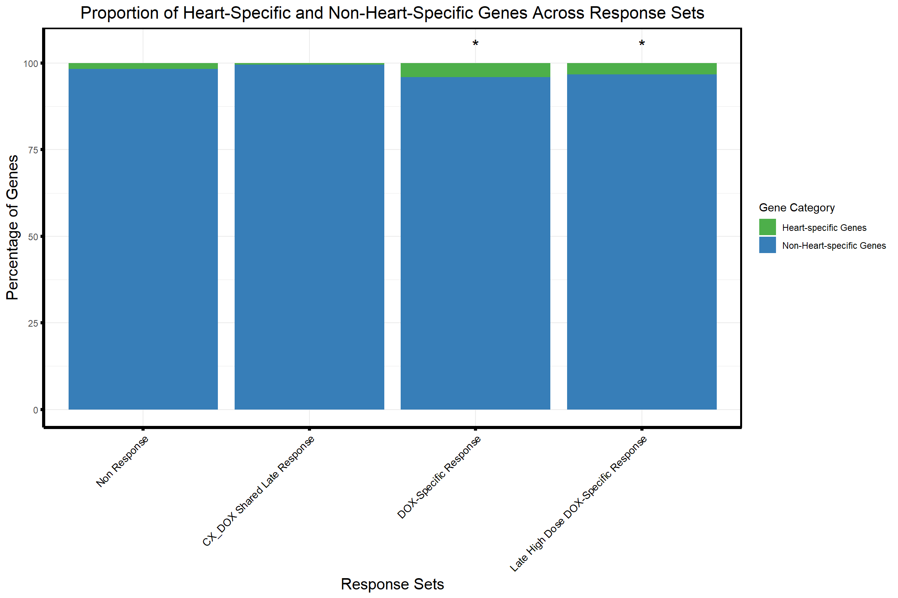

Tissue
Last updated: 2025-04-30
Checks: 6 1
Knit directory: CX5461_Project/
This reproducible R Markdown analysis was created with workflowr (version 1.7.1). The Checks tab describes the reproducibility checks that were applied when the results were created. The Past versions tab lists the development history.
The R Markdown file has unstaged changes. To know which version of
the R Markdown file created these results, you’ll want to first commit
it to the Git repo. If you’re still working on the analysis, you can
ignore this warning. When you’re finished, you can run
wflow_publish to commit the R Markdown file and build the
HTML.
Great job! The global environment was empty. Objects defined in the global environment can affect the analysis in your R Markdown file in unknown ways. For reproduciblity it’s best to always run the code in an empty environment.
The command set.seed(20250129) was run prior to running
the code in the R Markdown file. Setting a seed ensures that any results
that rely on randomness, e.g. subsampling or permutations, are
reproducible.
Great job! Recording the operating system, R version, and package versions is critical for reproducibility.
Nice! There were no cached chunks for this analysis, so you can be confident that you successfully produced the results during this run.
Great job! Using relative paths to the files within your workflowr project makes it easier to run your code on other machines.
Great! You are using Git for version control. Tracking code development and connecting the code version to the results is critical for reproducibility.
The results in this page were generated with repository version 6f9e594. See the Past versions tab to see a history of the changes made to the R Markdown and HTML files.
Note that you need to be careful to ensure that all relevant files for
the analysis have been committed to Git prior to generating the results
(you can use wflow_publish or
wflow_git_commit). workflowr only checks the R Markdown
file, but you know if there are other scripts or data files that it
depends on. Below is the status of the Git repository when the results
were generated:
Ignored files:
Ignored: .RData
Ignored: .Rhistory
Ignored: .Rproj.user/
Ignored: 0.1 box.svg
Ignored: Rplot04.svg
Untracked files:
Untracked: 0.1 density.svg
Untracked: 0.1.emf
Untracked: 0.1.svg
Untracked: 0.5 box.svg
Untracked: 0.5 density.svg
Untracked: 0.5.svg
Untracked: CX_5461_Pattern_Genes_24hr.csv
Untracked: CX_5461_Pattern_Genes_3hr.csv
Untracked: Cell viability box plot.svg
Untracked: DRC1.svg
Untracked: Figure 1.jpeg
Untracked: Figure 1.pdf
Untracked: Figure_CM_Purity.pdf
Untracked: Rplot.svg
Untracked: Rplot01.svg
Untracked: Rplot02.svg
Untracked: Rplot03.svg
Untracked: Rplot05.svg
Untracked: Rplot06.svg
Untracked: Rplot07.svg
Untracked: Rplot08.jpeg
Untracked: Rplot08.svg
Untracked: Rplot09.svg
Untracked: Rplot10.svg
Untracked: Rplot11.svg
Untracked: TS HPA (Violin).svg
Untracked: TS HPA.svg
Untracked: TS_HA.svg
Untracked: TS_HV.svg
Untracked: Violin HA.svg
Untracked: Violin HV (CX vs DOX).svg
Untracked: Violin HV.svg
Untracked: data/AF.csv
Untracked: data/AF_Mapped.csv
Untracked: data/AF_genes.csv
Untracked: data/CAD_genes.csv
Untracked: data/Cardiotox.csv
Untracked: data/DDR.csv
Untracked: data/DDR_Mapped.csv
Untracked: data/DOX_Vald.csv
Untracked: data/DOX_Vald_Mapped.csv
Untracked: data/Entrez_Cardiotox.csv
Untracked: data/Entrez_Cardiotox_Mapped.csv
Untracked: data/GWAS.xlsx
Untracked: data/GWAS_SNPs.bed
Untracked: data/HF.csv
Untracked: data/HF_Mapped.csv
Untracked: data/HF_genes.csv
Untracked: data/Hypertension_genes.csv
Untracked: data/MI_genes.csv
Untracked: data/TS.csv
Untracked: data/TS_HPA.csv
Untracked: data/TS_HPA_mapped.csv
Untracked: data/Toptable_CX_0.1_24.csv
Untracked: data/Toptable_CX_0.1_3.csv
Untracked: data/Toptable_CX_0.1_48.csv
Untracked: data/Toptable_CX_0.5_24.csv
Untracked: data/Toptable_CX_0.5_3.csv
Untracked: data/Toptable_CX_0.5_48.csv
Untracked: data/Toptable_DOX_0.1_24.csv
Untracked: data/Toptable_DOX_0.1_3.csv
Untracked: data/Toptable_DOX_0.1_48.csv
Untracked: data/Toptable_DOX_0.5_24.csv
Untracked: data/Toptable_DOX_0.5_3.csv
Untracked: data/Toptable_DOX_0.5_48.csv
Untracked: data/ts_data_mapped
Untracked: results/
Untracked: run_bedtools.bat
Unstaged changes:
Deleted: analysis/Actox.Rmd
Modified: analysis/Tissue.Rmd
Note that any generated files, e.g. HTML, png, CSS, etc., are not included in this status report because it is ok for generated content to have uncommitted changes.
These are the previous versions of the repository in which changes were
made to the R Markdown (analysis/Tissue.Rmd) and HTML
(docs/Tissue.html) files. If you’ve configured a remote Git
repository (see ?wflow_git_remote), click on the hyperlinks
in the table below to view the files as they were in that past version.
| File | Version | Author | Date | Message |
|---|---|---|---|---|
| Rmd | 02edb70 | sayanpaul01 | 2025-04-07 | Commit |
| html | 02edb70 | sayanpaul01 | 2025-04-07 | Commit |
| Rmd | ffaf948 | sayanpaul01 | 2025-04-06 | Commit |
| html | ffaf948 | sayanpaul01 | 2025-04-06 | Commit |
| Rmd | 1c1e1e4 | sayanpaul01 | 2025-02-28 | Commit |
| Rmd | cb00774 | sayanpaul01 | 2025-02-28 | Commit |
| html | cb00774 | sayanpaul01 | 2025-02-28 | Commit |
| Rmd | fa75295 | sayanpaul01 | 2025-02-28 | Commit |
| html | fa75295 | sayanpaul01 | 2025-02-28 | Commit |
| Rmd | cf29408 | sayanpaul01 | 2025-02-28 | Commit |
| html | cf29408 | sayanpaul01 | 2025-02-28 | Commit |
📌 Tissue specificity analysis (Correlation Heatmap)
📌 Load Required Libraries
library(ggplot2)
library(dplyr)Warning: package 'dplyr' was built under R version 4.3.2library(tidyr)Warning: package 'tidyr' was built under R version 4.3.3library(org.Hs.eg.db)Warning: package 'AnnotationDbi' was built under R version 4.3.2Warning: package 'BiocGenerics' was built under R version 4.3.1Warning: package 'Biobase' was built under R version 4.3.1Warning: package 'IRanges' was built under R version 4.3.1Warning: package 'S4Vectors' was built under R version 4.3.2library(clusterProfiler)Warning: package 'clusterProfiler' was built under R version 4.3.3library(biomaRt)Warning: package 'biomaRt' was built under R version 4.3.2library(pheatmap)Warning: package 'pheatmap' was built under R version 4.3.1📌 Load Data
# Read the CSV file into R
file_path <- "data/count.csv"
df <- read.csv(file_path, check.names = FALSE)
# Remove 'x' from column headers (if applicable)
colnames(df) <- gsub("^x", "", colnames(df))
# Step 1: Calculate IPSC_CM (Median across VEH samples)
# Select columns with 'VEH' in their names
veh_columns <- grep("VEH", colnames(df), value = TRUE)
# Calculate the median logCPM across VEH samples
df$IPSC_CM <- apply(df[, veh_columns], 1, median, na.rm = TRUE)
# Create a new dataframe with Entrez_ID and IPSC_CM
veh_median_df <- df[, c("Entrez_ID", "IPSC_CM")]
# Step 2: Read the Tissue_Gtex dataset
Tissue_Gtex <- read.csv("data/Tissue_Gtex.csv")
# Step 3: Convert Ensembl IDs to Entrez IDs using biomaRt
mart <- useMart("ensembl", dataset = "hsapiens_gene_ensembl")
gene_ids <- Tissue_Gtex$gene.id
conversion <- getBM(
attributes = c("ensembl_gene_id", "entrezgene_id"),
filters = "ensembl_gene_id",
values = gene_ids,
mart = mart
)
# Merge Entrez IDs back into Tissue_Gtex
Tissue_Gtex <- merge(Tissue_Gtex, conversion, by.x = "gene.id", by.y = "ensembl_gene_id", all.x = TRUE)
# Rename for consistency
colnames(Tissue_Gtex)[colnames(Tissue_Gtex) == "entrezgene_id"] <- "Entrez_ID"
# Step 4: Ensure Entrez_ID column types match before merging
veh_median_df$Entrez_ID <- as.character(veh_median_df$Entrez_ID)
Tissue_Gtex$Entrez_ID <- as.character(Tissue_Gtex$Entrez_ID)
# Step 5: Merge iPSC_CM with Tissue_Gtex by Entrez_ID
merged_df <- merge(veh_median_df, Tissue_Gtex, by = "Entrez_ID", all.x = TRUE)
# Step 6: Remove rows with NA values
cleaned_df <- na.omit(merged_df) 📌 Correlation heatmap (Tissue specificity)
# Filter relevant tissue columns
tissue_cols <- colnames(cleaned_df)[which(colnames(cleaned_df) %in% c(
"IPSC_CM", "Adrenal.Gland", "Spleen", "Heart...Atrial", "Pancreas", "Artery", "Breast",
"small.Intestine", "Colon", "Nerve...Tibial", "Esophagus", "Muscle...Skeletal",
"Thyroid", "Heart..Ventricle", "Stomach", "Uterus", "Vagina", "Skin", "Ovary", "Liver",
"Lung", "Brain", "Pituitary", "Testis", "Prostate", "Salivary.Gland"))]
data_subset <- cleaned_df[, tissue_cols]
# Compute Pearson and Spearman correlations
pearson_corr <- cor(data_subset, method = "pearson", use = "complete.obs")
spearman_corr <- cor(data_subset, method = "spearman", use = "complete.obs")
# Reorder tissues by highest correlation with IPSC_CM
order_pearson <- order(pearson_corr["IPSC_CM", ], decreasing = TRUE)
order_spearman <- order(spearman_corr["IPSC_CM", ], decreasing = TRUE)
pearson_corr <- pearson_corr[order_pearson, order_pearson]
spearman_corr <- spearman_corr[order_spearman, order_spearman]
# Plot Pearson correlation heatmap
pheatmap(pearson_corr,
cluster_rows = TRUE,
cluster_cols = TRUE,
main = "Pearson Correlation Heatmap",
color = colorRampPalette(c("blue", "white", "red"))(100),
display_numbers = TRUE,
number_format = "%.2f",
fontsize_number = 8)
# Optional: Plot Spearman correlation heatmap
pheatmap(spearman_corr,
cluster_rows = TRUE,
cluster_cols = TRUE,
main = "Spearman Correlation Heatmap",
color = colorRampPalette(c("blue", "white", "red"))(100),
display_numbers = TRUE,
number_format = "%.2f",
fontsize_number = 8)
📌 Correlation Plot (Tissue specificity)
# Load libraries
library(ComplexHeatmap)Warning: package 'ComplexHeatmap' was built under R version 4.3.1library(circlize)Warning: package 'circlize' was built under R version 4.3.3library(grid)
# Compute correlation (Pearson)
cor_values <- cor(data_subset, method = "pearson", use = "complete.obs")
# Extract and sort correlations with median-based IPSC_CM
ipsc_cm_corr <- cor_values["IPSC_CM", ]
ipsc_cm_corr_sorted <- sort(ipsc_cm_corr, decreasing = TRUE)
# Create matrix for heatmap
corr_matrix <- matrix(ipsc_cm_corr_sorted, ncol = 1)
rownames(corr_matrix) <- names(ipsc_cm_corr_sorted)
colnames(corr_matrix) <- "IPSC_CM"
# Define color function: blue → white → red
col_fun <- colorRamp2(
c(0.5, 0.75, 1.0),
c("blue", "white", "red")
)
# Plot heatmap
Heatmap(
corr_matrix,
name = "Corr.",
col = col_fun,
cluster_rows = FALSE,
cluster_columns = FALSE,
show_column_names = TRUE,
show_row_names = TRUE,
row_names_side = "right",
column_names_side = "bottom",
column_title = "Pearson Correlation with IPSC_CM (Median)",
column_title_gp = gpar(fontsize = 14, fontface = "bold"),
heatmap_width = unit(5, "cm"),
heatmap_height = unit(12, "cm"),
cell_fun = function(j, i, x, y, width, height, fill) {
grid.text(sprintf("%.2f", corr_matrix[i, j]), x, y, gp = gpar(fontsize = 9))
}
)
| Version | Author | Date |
|---|---|---|
| 02edb70 | sayanpaul01 | 2025-04-07 |
📌 Tissue specific gene proportions in corrmotif clusters
📌 Load Datasets
# Load your Heart_genes dataset
heart_genes <- read.csv("data/Human_Heart_Genes.csv", stringsAsFactors = FALSE)
# Convert Gene names to Entrez IDs in heart_genes
heart_genes$Entrez_ID <- mapIds(
org.Hs.eg.db,
keys = heart_genes$Gene,
column = "ENTREZID",
keytype = "SYMBOL",
multiVals = "first"
)
# Create a vector of Entrez IDs specific to the heart
heart_entrez_ids <- na.omit(heart_genes$Entrez_ID)
# Load the saved datasets
prob_all_1 <- read.csv("data/prob_all_1.csv")$Entrez_ID
prob_all_2 <- read.csv("data/prob_all_2.csv")$Entrez_ID
prob_all_3 <- read.csv("data/prob_all_3.csv")$Entrez_ID
prob_all_4 <- read.csv("data/prob_all_4.csv")$Entrez_ID📌 Tissue specific gene proportions analysis
# Example Response Groups Data (Replace with actual data)
response_groups <- list(
"Non Response" = prob_all_1, # Replace 'prob_all_1', 'prob_all_2', etc. with your actual response group dataframes
"CX_DOX Shared Late Response" = prob_all_2,
"DOX-Specific Response" = prob_all_3,
"Late High Dose DOX-Specific Response" = prob_all_4
)
# Combine all response groups into a single dataframe
response_groups_df <- bind_rows(
lapply(response_groups, function(ids) data.frame(Entrez_ID = ids)),
.id = "Set"
)
# Categorize genes into Heart-specific and Non-Heart-specific
response_groups_df <- response_groups_df %>%
mutate(
Category = ifelse(Entrez_ID %in% heart_entrez_ids, "Heart-specific Genes", "Non-Heart-specific Genes")
)
# Calculate counts for Heart-specific and Non-Heart-specific genes in each response group
proportion_data <- response_groups_df %>%
group_by(Set, Category) %>%
summarize(Count = n(), .groups = "drop")
# Reference counts for "Non Response"
non_response_counts <- proportion_data %>%
filter(Set == "Non Response") %>%
dplyr::select(Category, Count) %>%
{setNames(.$Count, .$Category)} # Create named vector for "Non Response" counts
# Perform Chi-square test for selected response groups compared to "Non Response"
chi_results <- proportion_data %>%
filter(Set != "Non Response") %>% # Exclude "Non Response"
group_by(Set) %>%
summarize(
p_value = {
# Extract counts for the current response group
group_counts <- Count[Category %in% c("Heart-specific Genes", "Non-Heart-specific Genes")]
# Ensure there are no missing categories, fill with 0 if missing
if (length(group_counts) < 2) group_counts <- c(group_counts, 0)
# Create contingency table
contingency_table <- matrix(c(
group_counts[1], group_counts[2],
non_response_counts["Heart-specific Genes"], non_response_counts["Non-Heart-specific Genes"]
), nrow = 2)
# Print the contingency table for debugging
print(paste("Set:", unique(Set)))
print("Contingency Table:")
print(contingency_table)
# Perform chi-square test
if (all(contingency_table >= 0 & is.finite(contingency_table))) {
chisq.test(contingency_table)$p.value
} else {
NA
}
},
.groups = "drop"
) %>%
mutate(Significance = ifelse(!is.na(p_value) & p_value < 0.05, "*", ""))[1] "Set: CX_DOX Shared Late Response"
[1] "Contingency Table:"
[,1] [,2]
[1,] 2 123
[2,] 412 6908
[1] "Set: DOX-Specific Response"
[1] "Contingency Table:"
[,1] [,2]
[1,] 62 123
[2,] 1469 6908
[1] "Set: Late High Dose DOX-Specific Response"
[1] "Contingency Table:"
[,1] [,2]
[1,] 159 123
[2,] 4715 6908# Merge chi-square results back into the proportion data
proportion_data <- proportion_data %>%
left_join(chi_results %>% dplyr::select(Set, p_value, Significance), by = "Set")
# Calculate proportions for plotting
proportion_data <- proportion_data %>%
group_by(Set) %>%
mutate(Percentage = (Count / sum(Count)) * 100)
# Define the correct order for response groups
response_order <- c(
"Non Response",
"CX_DOX Shared Late Response",
"DOX-Specific Response",
"Late High Dose DOX-Specific Response"
)
proportion_data$Set <- factor(proportion_data$Set, levels = response_order)
# Create the proportion plot with significance stars
ggplot(proportion_data, aes(x = Set, y = Percentage, fill = Category)) +
geom_bar(stat = "identity", position = "stack") +
geom_text(
data = proportion_data %>% distinct(Set, Significance), # Add stars for significant groups
aes(x = Set, y = 105, label = Significance), # Position stars above the bars
inherit.aes = FALSE,
size = 6,
color = "black",
hjust = 0.5
) +
scale_fill_manual(values = c(
"Heart-specific Genes" = "#4daf4a", # Green
"Non-Heart-specific Genes" = "#377eb8" # Blue
)) +
labs(
title = "Proportion of Heart and Non-Heart-Specific Genes Across Response Sets",
x = "Response Sets",
y = "Percentage of Genes",
fill = "Gene Category"
) +
theme_minimal() +
theme(
plot.title = element_text(size = rel(1.5), hjust = 0.5),
axis.title = element_text(size = 15, color = "black"),
axis.ticks = element_line(linewidth = 1.5),
axis.line = element_line(linewidth = 1.5),
axis.text.x = element_text(size = 10, color = "black", angle = 45, hjust = 1),
strip.text = element_text(size = 12, face = "bold"),
panel.border = element_rect(color = "black", fill = NA, linewidth = 1.5) # Add border
)Warning: Removed 1 row containing missing values or values outside the scale range
(`geom_text()`).
sessionInfo()R version 4.3.0 (2023-04-21 ucrt)
Platform: x86_64-w64-mingw32/x64 (64-bit)
Running under: Windows 11 x64 (build 26100)
Matrix products: default
locale:
[1] LC_COLLATE=English_United States.utf8
[2] LC_CTYPE=English_United States.utf8
[3] LC_MONETARY=English_United States.utf8
[4] LC_NUMERIC=C
[5] LC_TIME=English_United States.utf8
time zone: America/Chicago
tzcode source: internal
attached base packages:
[1] grid stats4 stats graphics grDevices utils datasets
[8] methods base
other attached packages:
[1] circlize_0.4.16 ComplexHeatmap_2.18.0 pheatmap_1.0.12
[4] biomaRt_2.58.2 clusterProfiler_4.10.1 org.Hs.eg.db_3.18.0
[7] AnnotationDbi_1.64.1 IRanges_2.36.0 S4Vectors_0.40.2
[10] Biobase_2.62.0 BiocGenerics_0.48.1 tidyr_1.3.1
[13] dplyr_1.1.4 ggplot2_3.5.2
loaded via a namespace (and not attached):
[1] RColorBrewer_1.1-3 shape_1.4.6.1 rstudioapi_0.17.1
[4] jsonlite_2.0.0 magrittr_2.0.3 magick_2.8.6
[7] farver_2.1.2 rmarkdown_2.29 GlobalOptions_0.1.2
[10] fs_1.6.3 zlibbioc_1.48.2 vctrs_0.6.5
[13] Cairo_1.6-2 memoise_2.0.1 RCurl_1.98-1.17
[16] ggtree_3.10.1 htmltools_0.5.8.1 progress_1.2.3
[19] curl_6.2.2 gridGraphics_0.5-1 sass_0.4.10
[22] bslib_0.9.0 plyr_1.8.9 cachem_1.1.0
[25] whisker_0.4.1 igraph_2.1.4 iterators_1.0.14
[28] lifecycle_1.0.4 pkgconfig_2.0.3 Matrix_1.6-1.1
[31] R6_2.6.1 fastmap_1.2.0 gson_0.1.0
[34] clue_0.3-66 GenomeInfoDbData_1.2.11 digest_0.6.34
[37] aplot_0.2.5 enrichplot_1.22.0 colorspace_2.1-0
[40] patchwork_1.3.0 rprojroot_2.0.4 RSQLite_2.3.9
[43] labeling_0.4.3 filelock_1.0.3 httr_1.4.7
[46] polyclip_1.10-7 compiler_4.3.0 doParallel_1.0.17
[49] bit64_4.6.0-1 withr_3.0.2 BiocParallel_1.36.0
[52] viridis_0.6.5 DBI_1.2.3 ggforce_0.4.2
[55] MASS_7.3-60 rappdirs_0.3.3 rjson_0.2.23
[58] HDO.db_0.99.1 tools_4.3.0 ape_5.8-1
[61] scatterpie_0.2.4 httpuv_1.6.15 glue_1.7.0
[64] nlme_3.1-168 GOSemSim_2.28.1 promises_1.3.2
[67] shadowtext_0.1.4 cluster_2.1.8.1 reshape2_1.4.4
[70] fgsea_1.28.0 generics_0.1.3 gtable_0.3.6
[73] data.table_1.17.0 hms_1.1.3 xml2_1.3.8
[76] tidygraph_1.3.1 XVector_0.42.0 foreach_1.5.2
[79] ggrepel_0.9.6 pillar_1.10.2 stringr_1.5.1
[82] yulab.utils_0.2.0 later_1.3.2 splines_4.3.0
[85] tweenr_2.0.3 BiocFileCache_2.10.2 treeio_1.26.0
[88] lattice_0.22-7 bit_4.6.0 tidyselect_1.2.1
[91] GO.db_3.18.0 Biostrings_2.70.3 knitr_1.50
[94] git2r_0.36.2 gridExtra_2.3 xfun_0.52
[97] graphlayouts_1.2.2 matrixStats_1.5.0 stringi_1.8.3
[100] workflowr_1.7.1 lazyeval_0.2.2 ggfun_0.1.8
[103] yaml_2.3.10 evaluate_1.0.3 codetools_0.2-20
[106] ggraph_2.2.1 tibble_3.2.1 qvalue_2.34.0
[109] ggplotify_0.1.2 cli_3.6.1 munsell_0.5.1
[112] jquerylib_0.1.4 Rcpp_1.0.12 GenomeInfoDb_1.38.8
[115] dbplyr_2.5.0 png_0.1-8 XML_3.99-0.18
[118] parallel_4.3.0 blob_1.2.4 prettyunits_1.2.0
[121] DOSE_3.28.2 bitops_1.0-9 viridisLite_0.4.2
[124] tidytree_0.4.6 scales_1.3.0 purrr_1.0.4
[127] crayon_1.5.3 GetoptLong_1.0.5 rlang_1.1.3
[130] cowplot_1.1.3 fastmatch_1.1-6 KEGGREST_1.42.0